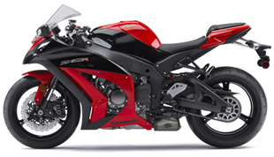

עמוד ראשי
על קוואסקי...
קווסאקי הוא מותג של התאגיד היפני תעשיות כבדות קווסאקי המייצר אופנועים בחטיבת מוצרי הצריכה שלו. היקף הייצור מציב את קווסאקי כאחת מחמש יצרניות האופנועים הגדולות בעולם. רוב הייצור מתבצע ביפן והשאר בדרום-מזרח אסיה וצפון אמריקה.
היסטריה חשובה בכמה נקודות:
- קווסאקי החלה לייצר רכיבים לתעשיית האופנועים בשנות ה-50 של המאה ה-20 וב-1954 ייצרה לראשונה אופנוע קטן במסגרת חטיבת האווירונאוטיקה. בשנת 1963 היא רכשה את חברת מגורו היפנית שהייתה בעלת ניסיון בייצור אופנועים במשך עשרות שנים. עקב הרכישה התרחב קו הדגמים של החברה בצורה משמעותית והחל ייצוא אופנועים לארצות הברית. אופנועים אלו היו קטנים יחסית ובעלי מנוע שתי פעימות.
- בשנת 1965 החלה קווסאקי לייצר אופנוע בעל מנוע ארבע פעימות בנפח 650 סמ"ק שכינויו היה W1. היה זה האופנוע היפני בעל נפח המנוע הגדול ביותר עד אז, אך למרות זאת הוא היה חלש מדי והביא להחלטה לחזור ולהתמקד במנועי שתי פעימות. כך נולד ה-H1 שכונה בארצות הברית בשם MACH III. היה זה אופנוע בעל מנוע שלושה צילינדרים בנפח 500 סמ"ק עם הספק של 60 כוחות סוס שהיה הגבוה ביותר בזמנו. אופנוע זה הביא לקווסאקי תהילה והפך אותה לבעלת תדמית חדשנית בקרב ציבור הרוכבים.
- קריירת המרוצים של קווסאקי לוותה במשך השנים בחוסר יציבות, כנראה עקב מדיניות תקציב שמרנית של התאגיד. ב-1969 משיגה קווסאקי את ההישג הראשון במרוצי אופנועי גרנד פרי בקטגוריית ה-125 עם הרוכב הבריטי דייב סימונס. זו הייתה האליפות היחידה ב-125, ועבר עשור נוסף עד לזכייה בתואר אחר במרוצי הגרנד פרי. בשנות ה-70 ניסתה החברה את כוחה גם בקטגוריית ה-500 הבכירה, אך ללא הצלחה יתרה.
- ב-1973 חזרה קווסאקי אל מנוע ארבע הפעימות עם ה-Z1. היה זה אופנוע עם מנוע ארבעה צילינדרי בנפח 900 סמ"ק עם הספק של 82 כוח סוס. הספק זה הציב שוב רף חדש בתחרות בין יצרני האופנועים. אופנוע זה היה גם המהיר ביותר בתקופתו.
- ב-1979 הציגה החברה אופנוע בעל מנוע חריג של שישה צילינדרים המסודרים בשורה. היה זה ה-Z1300 בנפח של 1300 סמ"ק והספק של 120 כ"ס. משקל האופנוע עם זאת היה גבוה יחסית והתקרב ל-300 ק"ג כך שהדגם התאים יותר לאופי רכיבה הידוע כרכיבת תיור, ואכן קווסאקי מציגים מספר שנים אחר כך את הווייג'ר שמבוסס על ה-Z1300 ומוסיף לו פיירינג גדול ואבזור נוסף לרכיבת תיור.
- ב-1978 התחילה קווסאקי ברצף הצלחות במרוצי הגרנד פרי עם שמונה אליפויות בקטגוריות ה-250 וה-350 שהביאו לה קורק בלינגטון הדרום אפריקאי ומנג אנטון הגרמני. אליפות ה-350 של אנטון ב-1982 הייתה האחרונה בקטגוריה לפני ביטולה.
- ב-1985 חזרה קווסאקי להתמקד באופנוע בנפח 900 סמ"ק שכינויו GPZ900R. מספר הצילינדרים הורד לארבע אך ההספק היה עדיין 120 כ"ס תוך שימוש בקירור מים. עם משקל של 228 ק"ג שוב שברה קווסאקי את שיא האופנוע המהיר ביותר עם 240 קמ"ש ותאוצה מ-0 ל-400 מטר ב-11 שניות. מספר שנים לאחר מכן שודרג נפח המנוע ל-1000 סמ"ק וב-1991 ל-1100 סמ"ק. דגם זה כונה ZZR1100 (בארצות הברית ZX-11) והיה בעל הספק של 147 כ"ס שהביאו אותו ביחד עם אווירודינמיות משופרת לשאת בכתר האופנוע הסדרתי המהיר ביותר, תואר בו החזיק במשך רוב שנות ה-90 של המאה ה-20.
- ב-1993 זכתה קווסאקי בפעם היחידה באליפות הסופרבייק העולמית עם הרוכב האמריקני סקוט ראסל על אופנוע ZXR750. כנהוג בסדרת מרוצים זו, גרסה דומה של האופנוע נמכרה לציבור הרחב והיוותה את חוד החנית של אופנועי הספורט של קווסאקי באותה עת.
- בשנת 2000 הציגה קווסאקי ממשיך ל-ZZR1100 בדמות ה-ZX-12R שהתאפיין שוב במבנה אווירודינמי בולט ובהספק מנוע של 185 כ"ס שהביאו אותו למהירות סופית של כ-300 קמ"ש. בשנת 2006 הוצג ה-ZZR1400 עם 187 כ"ס ועוד כ-10 כ"ס עם מערכת ראם-אייר שמביאים אותו למהירות סופית הגבוהה מ-300 קמ"ש.
- ב-2002, עם מעבר הקטגוריה הבכירה של מרוצי הגרנד פרי ל-MotoGP חזרה קווסאקי להשתתף בקטגוריה הבכירה לאחר 30 שנות היעדרות, אך טרם זכתה להחזיק בכתר אליפות זו מעולם.
- ב-2015 הציגה קווסאקי אופנוע מרוצים בשם "Ninja H2R", עם הספק של יותר מ-300 כוח סוס ומהירות מרבית של 400 קילומטר לשעה. זהו האופנוע המהיר ביותר בעולם. מקבילו, Ninja H2 המותאם לשימוש בכביש הציבורי, הוא בעל הספק של 200 כוח סוס ו-210 כוח סוס באמצעות מנגנון יניקת אוויר מסוג "Ram Air".
אודות
אולם תצוגה - מטרו סנטר
|
|  |
כתובת
רחוב עתיר ידע 18, כפר סבא
שעות פעילות:
א-ה 08:00-18:00
ו 09:00-13:00
טלפון
03-6335666
פקס
09-7670146
דוא"ל
metro@metro.co.il
|